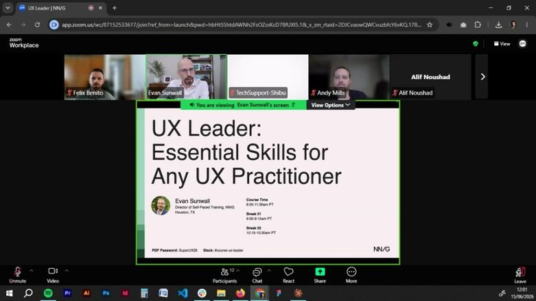
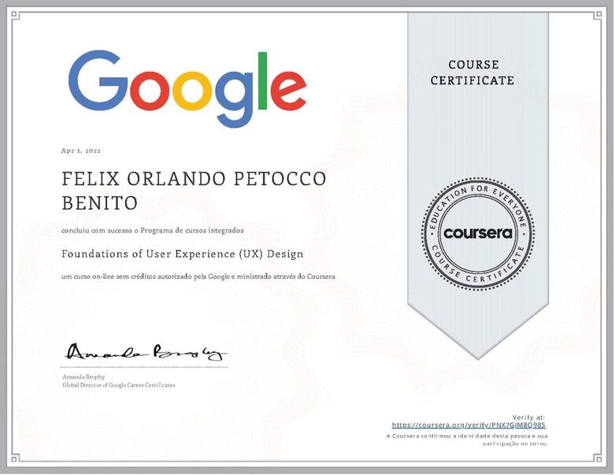
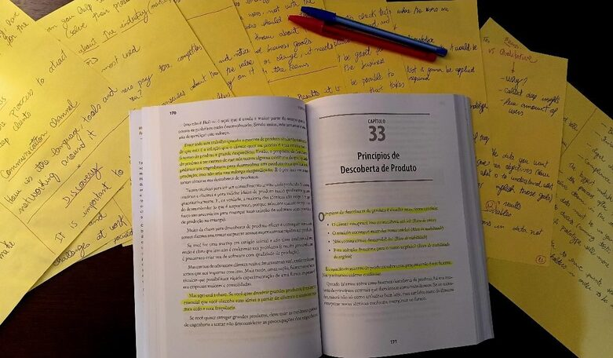
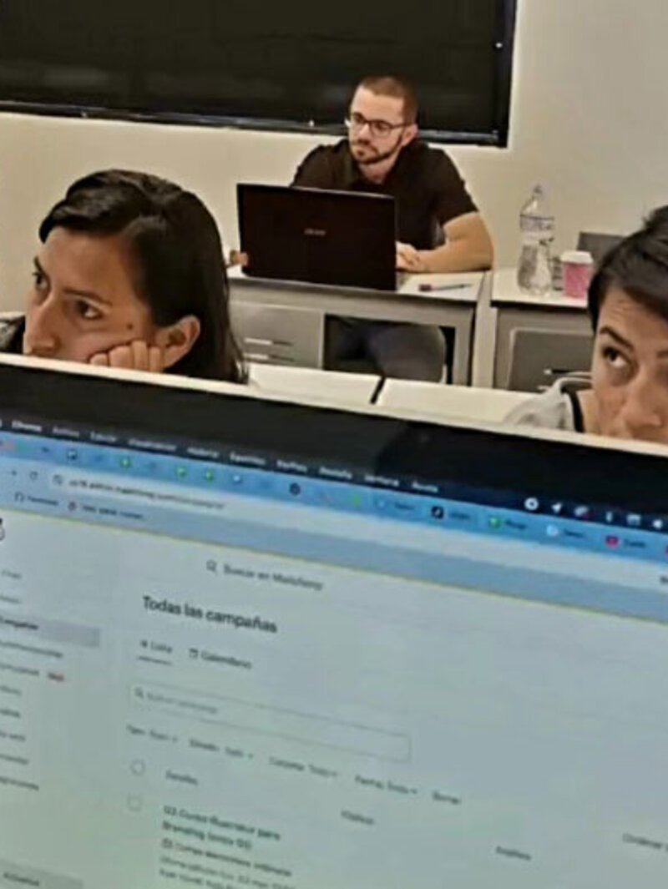

Design lead for complex enterprise products.
For global brands like Audi and Coca-Cola, I design systems, data-heavy interfaces and AI-assisted workflows, from Figma to working code.
Automotive · FMCG · Industrial · Data products
UX and UI Design Consultant at Radix.
18+ years across consumer, enterprise B2B, automotive and industrial product.
Design systems, data-heavy interfaces, AI product design, design and brand strategy, go-to-market and design to code handoff.
Working with teams across LATAM, EU and US.
I also write about design, strategy and business: Turn Off the AI to Get Better Results
Five projects that shaped how I lead.
From global B2B platforms at Coca-Cola and Audi to industrial software and consumer apps, I led these projects end to end, applying AI in several of them to move faster from research to a shipped decision.
Scroll to explore the cases, or take them with you.
Download portfolioMy process,
end to end.
From the first survey to the shipped code and the numbers after launch, one design voice across the whole thing.
{{ active.title }}
{{ active.body }}
{{ active.highlight }}
Eighteen years, one through-line.
The full CV lives here. This is the shape of it.
Always learning, always shipping
It started with a degree in advertising, where audience, narrative and brand are the entire craft. A postgraduate degree in design turned that craft into systems and products. An MBA in strategic communication added the business lens, positioning, framing, the discipline of saying no. Right now I am working toward my NN/g UX Certification, and I keep studying English, Spanish and Portuguese so the work lands wherever the team happens to be.




I stay in constant development: taking courses and workshops, reading and summarizing books by hand, which is how I hold on to what I learn.
From the people I’ve worked alongside.
Designers, developers, PMs and clients who’ve seen my work close-up. Pulled from LinkedIn recommendations.
{{ q.text }}
Worked with.
Selected global, regional and startup clients across automotive, FMCG, agriculture, retail and biotech.
Where the creativity comes from.
The interesting design decisions don't arrive at a desk. They show up on a road, in a museum room, in a café across the world, then get worked out by hand, on paper, wherever I am.
Exploring countries by road and on foot, hiking trails and staying as close to nature as I can, looking for the light, the color, the angle.
Exhibitions are where I study composition, contrast and restraint, the master of light and shadow, still teaching.
I work from cafés all over the world. The ambient noise, the rotating light, the strangers, all of it ends up in the work.
Every piece of work starts on paper before it touches a screen. I sketch outdoors too, just for myself, chasing a shape or a shadow with a pencil.